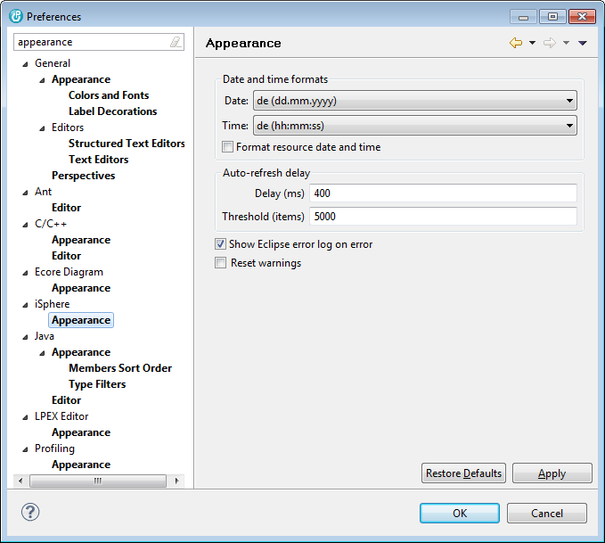

But if, for example, you run RDi with a different locale as your PC operating system as many German users do, you may want to specify your familiar date and time formats here.

The available options are:
| Date format | - | Specifies the format for displaying date values. With *LOCALE the date format of the current locale is used. |
| Time format | - | Specifies the format for displaying time values. With *LOCALE the time format of the current locale is used. |
| Reset warnings | - | Resets all messages that had been answered with 'Do not show this message again'. |